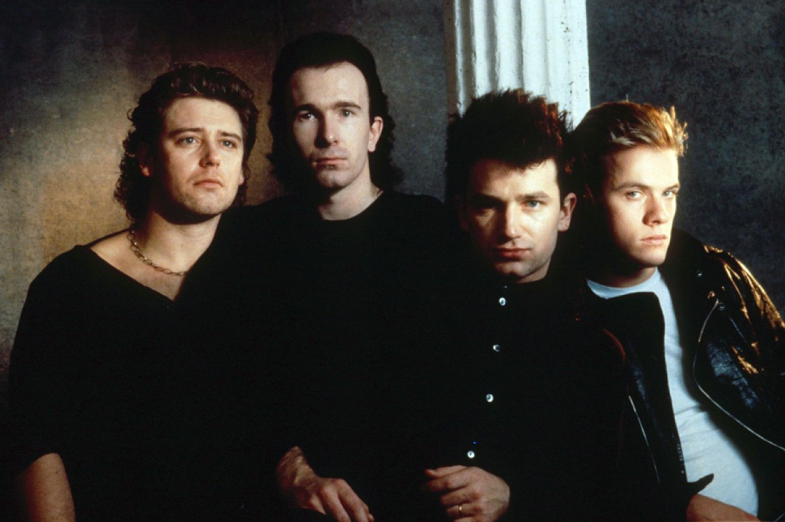
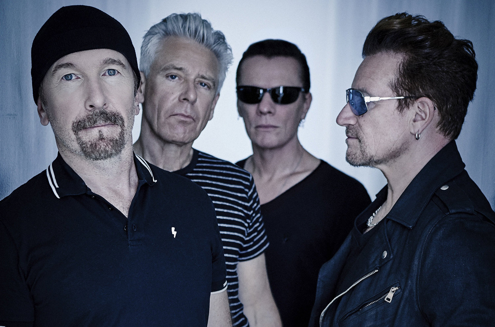

| Past | Present |
|---|---|
|  |  |
U2 are an Irish rock band from Dublin, formed in 1976. The group consists of Bono (lead vocals and rhythm guitar), the Edge (lead guitar, keyboards, and backing vocals), Adam Clayton (bass guitar), and Larry Mullen Jr. (drums and percussion). Initially rooted in post-punk, U2's musical style has evolved throughout their career, yet has maintained an anthemic quality built on Bono's expressive vocals and the Edge's effects-based guitar textures. Their lyrics, often embellished with spiritual imagery, focus on personal and sociopolitical themes. Popular for their live performances, the group have staged several ambitious and elaborate tours over their career.
The four of them formed the band - first known as Feedback, then shortly after as Hype — in 1976 after a teenage Mullen posted an ad on the bulletin board of their school. Biographies often note that the four didn't have a lot of technical proficiency at the time, but that arguably worked in their favor, as they developed creative workarounds that evolved into a rich tapestry of creativity. In 1978 the band changed their name to U2, and by 1980 they signed to Island Records and released their debut album Boy. In 1983 they released their first No. 1 album on the UK charts, War, and made a name for themselves as socially conscious artists.
ReferenceWith or Without You